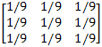
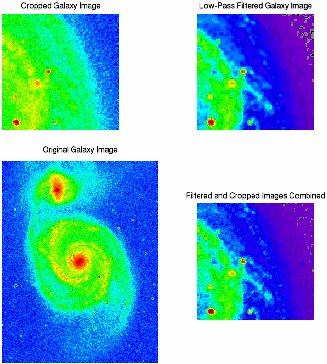

A low pass filter is the basis for most smoothing methods. An image is smoothed by decreasing the disparity between pixel values by averaging nearby pixels. Using a low pass filter tends to retain the low frequency information within an image while reducing the high frequency information. An example of a low pass filter is an array of ones divided by the number of elements within the kernel, such as the following 3 by 3 kernel:

The above array is just an example of one possible kernel for a low pass filter. Other filters may include more weighting for the center point, or have different smoothing in each dimension.
The following example uses the
CONVOL
function to smooth a whirlpool galaxy M51 image. This example data is available in the
examples/data
directory of your IDL installation. The code shown below creates the following images:

; Import the image from the file.
file = FILEPATH('m51.dat', $
SUBDIRECTORY = ['examples', 'data'])
orig_imageSize = [340, 440]
orig_image = READ_BINARY(file, DATA_DIMS = orig_imageSize)
im = IMAGE(orig_image, RGB_TABLE=26, $
TITLE = "Original Galaxy Image", $
POSITION = [.10, .025, .50, .55], DIMENSIONS=[800, 800])
croppedSize = [96, 96]
croppedImage = orig_image[200:(croppedSize[0] - 1) + 200, $
180:(croppedSize[1] - 1) + 180]
im01 = IMAGE(croppedImage, $
RGB_TABLE = 26, $
TITLE = "Cropped Galaxy Image", $
POSITION = [.10, .625, .40, .925], /CURRENT)
; Create a low pass filter.
kernelSize = [3, 3]
kernel = REPLICATE((1./(kernelSize[0]*kernelSize[1])), $
kernelSize[0], kernelSize[1])
; Apply the filter to the image.
filteredImage = CONVOL(FLOAT(croppedImage), kernel, $
/CENTER, /EDGE_TRUNCATE)
im02 = IMAGE(filteredImage, $
RGB_TABLE = 26, $
TITLE = "Low-Pass Filtered Galaxy Image", $
POSITION = [.60, .625, .90, .925], /CURRENT)
im03 = IMAGE(croppedImage + filteredImage, $
RGB_TABLE = 26, $
TITLE = "Filtered and Cropped Images Combined", $
POSITION = [.60, .125, .90, .45], /CURRENT)